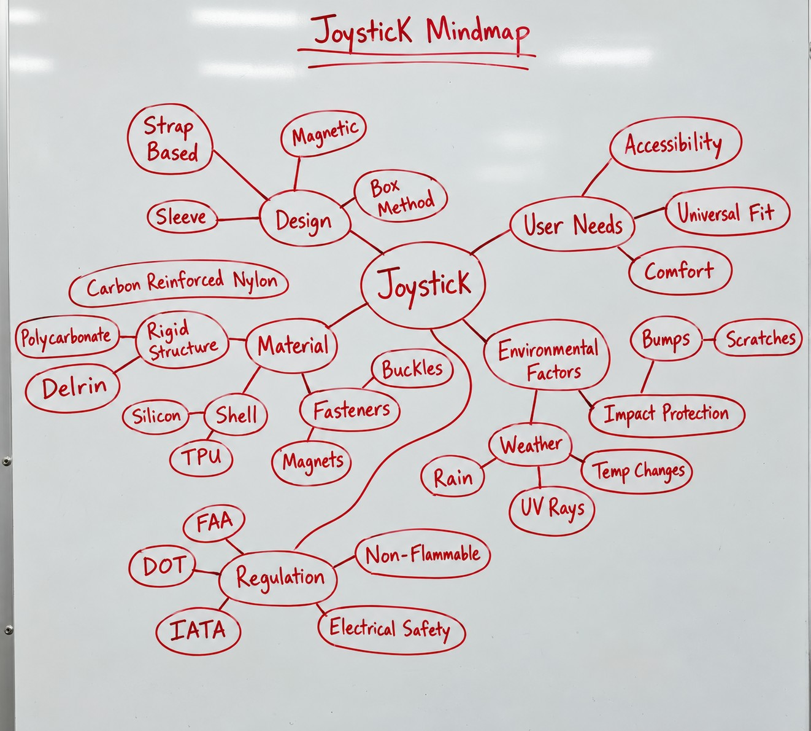

- Role
- Industrial designer: concept sketches, 3D renders, visual communication
- Team
- Fall 2025 team of 3: industrial design, industrial & systems engineering, electrical engineering
- Mentors
- Boeing seats integration engineer · All Wheels Up board member (retired Boeing seating) · parent of a wheelchair user
- Timeframe
- Aug 2025 - Aug 2026
- Tools
- Blender, sketching, whiteboard mind mapping
Problem
Damage rarely comes from one big event. It comes from many small ones. Handlers drop chairs onto conveyor belts, bump them into cargo walls, and tip them on their side to fit through short cargo doors. The joystick sits at the front edge of the armrest, takes most of those hits, and can't be detached like a headrest can.
My role
I sketched and modeled the concepts, turned them into Blender renders for mentor reviews, and kept the team's meeting notes. I also helped present every week to our mentors, including a Boeing seats integration engineer.
Process
Narrow to the part that strands peopleWe first split up across components, and I took the headrest. A mentor whose son uses a wheelchair pointed out that headrests can be removed and carried on board, but joysticks can't. So we moved the whole team onto the joystick.
Write requirements from the cargo holdSurvive 3-6 ft drops and sideways crushing. Hold up from −65°F to 160°F and from sea level to 40,000 ft, and resist de-icing fluid and fuel. For the passenger, it has to install in under a minute, one-handed, with no tools, and be small enough to pack.
Map the whole problemMapped design approaches, materials, fasteners, regulations (FAA, DOT, IATA) and environmental hazards in one place, so we could connect damage patterns to solutions.
Generate and model conceptsRan two-hour concept sessions twice a week. Three directions came out of them: a rigid case, a flexible shell with a TPU grommet, and a two-part sleeve. I modeled them in Blender for review.
Widen the scopeMentor feedback and damage cases showed that the screen, wiring and mounts fail along with the joystick. We expanded the brief to cover the whole control area.

My joystick mind map
Key insight
The protector doesn't need to survive a drop from space. It needs to tell a rushed handler "fragile medical equipment."
High-visibility color and clear labeling became requirements alongside impact protection, because a visible cue changes how people handle the chair.
Outcome
We delivered three developed concepts, a set of design requirements, and test metrics for the next team. The metrics include drop and compression tests, fit across 3-5 wheelchair models, and an install time under 60 seconds. The two-year plan moves to down-selection and detailed design in spring 2026, then building and testing in fall 2026.
Where it took me next: in summer 2026 I started asking how economy travel, on trains and in airports as well as planes, could feel considered instead of stripped down. That is an open question I'm carrying forward, not a finished project.